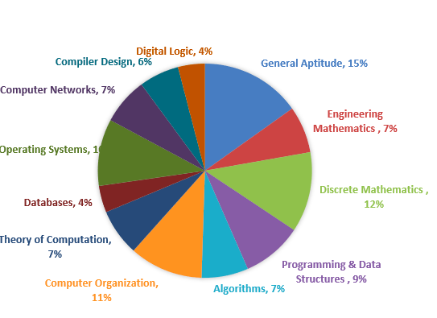
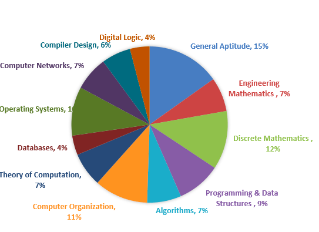

Computer Engineering
Know about Computer Engineering
Computer engineers work with all aspects of computer operating systems, from software to robotics. As a computer engineer, you’ll work closely with other engineers and programmers to design computer systems and test their functionality. You’ll remain current with the latest technology and update software and hardware to keep systems running smoothly.
 

Click here for info
Computer engineers have job titles like:
- Hardware Engineer
- Hardware Test Engineer
- ASIC Architect
- Validation Engineer
- Embedded Software Engineer
- Systems Engineer
- Firmware Engineer
Computer Engineering